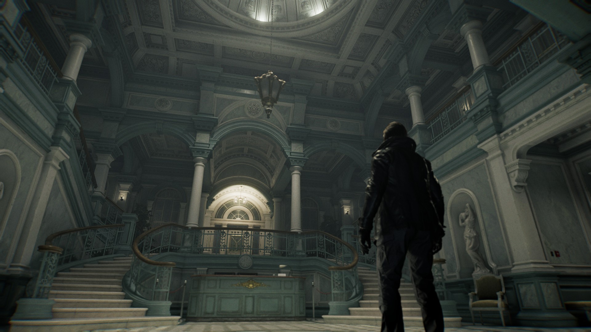
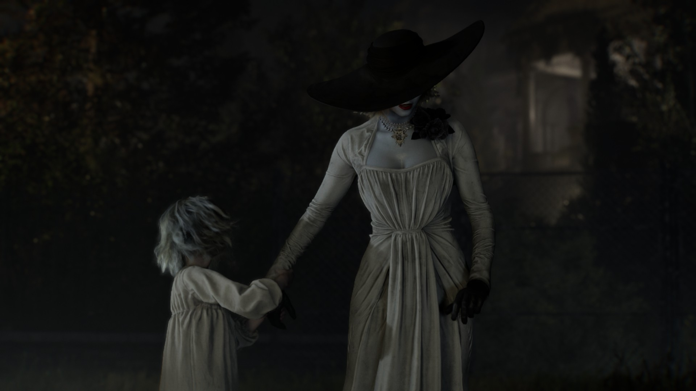

Resident Evil Requiem — дев'ята номерна частина серії survival horror від компанії Capcom. Гра поєднує атмосферу страху та виживання з класичною для серії дослідницькою структурою: похмурі локації, обмежені ресурси та загадки. На скріншоті нижче показано величний парадний хол із двома сходами, колонами та склепінчастою стелею: герой стоїть спиною до гравця й дивиться на освітлені двері, а тьмяне світло створює відчуття тривоги.

Рис. 1. Парадний хол (клікніть на люстру, двері або героя)
Люстра — єдиний предмет, що виділяється під склепінням залу.
Освітлені двері — орієнтир, куди гравець рухається далі.
Герой — персонаж, яким керує гравець.
Resident Evil Requiem продовжує традиції серії, яка почалася ще в 1996 році. Гравцеві належить досліджувати небезпечні місця, збирати предмети, економити патрони та уникати зустрічей із ворогами, коли сил для бою недостатньо. Саме поєднання тривожної атмосфери, звуку та світла робить серію впізнаваною.

Клікніть на зображення, щоб перейти на сторінку про гру.